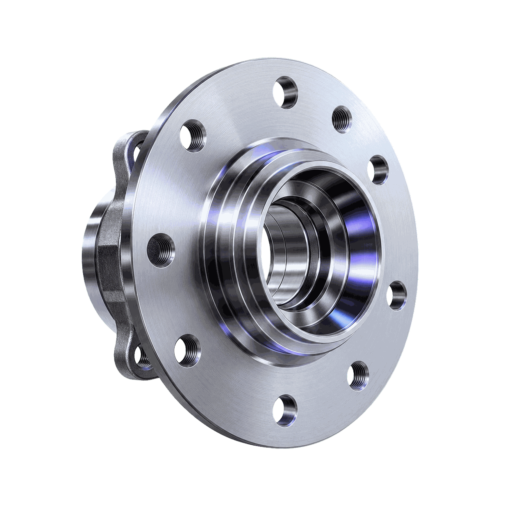

01
Точение
Формирует посадочные диаметры под подшипник и ступичный фланец, обеспечивает соосность и заданную шероховатость рабочих поверхностей за черновой и чистовой проход.

Обеспечить точность посадочных диаметров, соосность и чистоту рабочих поверхностей под подшипник и ступичный фланец.
Значения ориентировочные — типовой диапазон для серийной ступицы колеса. Точные параметры уточняются по чертежу.
Формирует посадочные диаметры под подшипник и ступичный фланец, обеспечивает соосность и заданную шероховатость рабочих поверхностей за черновой и чистовой проход.
Формирует отверстия под крепёжные шпильки колеса по точной окружности, обеспечивая равномерное распределение нагрузки на ступицу.
Обрабатывает технологические плоскости и элементы фиксации ступицы (лыски, шлицевые пазы), если они предусмотрены конструкцией детали.
Проверка торцевого и радиального биения посадочных поверхностей, диаметров и межосевого расстояния отверстий на координатно-измерительном оборудовании.
Базовый маршрут — три единицы оборудования: токарный станок с ЧПУ для посадочных диаметров, радиально-сверлильный станок для отверстий крепления и вертикальный обрабатывающий центр для технологических плоскостей. Для серийного производства альтернативой является токарный обрабатывающий центр с приводным инструментом — точение, сверление и фрезерование выполняются за один установ на одном станке, что сокращает цикл и повышает точность взаимного расположения поверхностей.